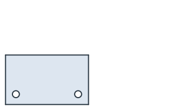
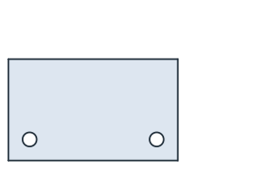
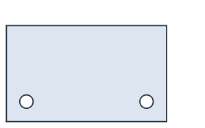
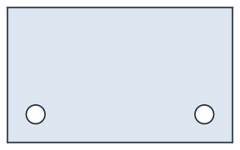
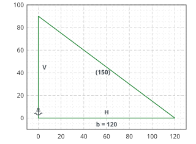
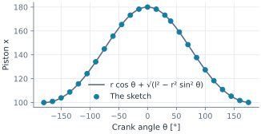

Expressions: design rules
A drawing is a set of numbers, and a design is a set of rules between them. A plate is three fifths as tall as it is wide, a connecting rod is three and a half cranks long, or a duct keeps its cross-section while its shape changes. sk.Expression("height = 0.6*width") adds such a rule: an equation between dimensions and measures of the solved geometry, solved together with every other constraint. When one number changes, everything that depends on it follows, and when the rules ask for
something impossible, the sketch says so.
[1]:
import math
import warnings
import numpy as np
import planex as px
One number drives the family
The example is a mounting plate with two bolt holes. Only the width is a number, and every other size is a rule. The height is 0.6 of the width, the bolt diameter is a twelfth of it, and the edge distance is one and a half bolt diameters, the usual rule for bolted plates. The holes sit at the edge distance from the sides and the bottom.
[3]:
plate = px.Sketch(id="plate")
plate.Move(plate.origin, px.Coincident).Line(80, 0, px.Horizontal, id="bottom")
plate.Line(0, 50, px.Perpendicular, id="right").Line(-80, 0, px.Perpendicular, id="top")
plate.Close(px.Perpendicular, id="left")
plate.Constrain("bottom", px.Distance, 80, id="width")
plate.Constrain("left", px.Distance, 50, id="height")
plate.Circle(10, 10, 3, id="hole L").Circle(70, 10, 3, id="hole R")
plate.Constrain("hole L", px.Diameter, 6, id="d")
plate.Constrain("hole L", "hole R", px.Equal)
plate.Constrain("hole L.center", "left", px.Distance, 10, id="e")
plate.Constrain("hole R.center", "right", px.Distance, 10, id="e right")
plate.Constrain("hole L.center", "bottom", px.Distance, 10, id="e bottom")
plate.Constrain("hole L.center", "hole R.center", px.Horizontal)
for rule in ("height = 0.6*width", "d = width/12", "e = 1.5*d", "e right = e", "e bottom = e"):
plate.Expression(rule)
print(plate.status, plate.dof)
for id, rule in plate.expressions.items():
print(id, rule)
full 0
Expression.1 height = 0.6*width
Expression.2 d = width/12
Expression.3 e = 1.5*d
Expression.4 e right = e
Expression.5 e bottom = e
A sweep of the width takes one Update per size, and the rules hold exactly at every step. A driven dimension can no longer be set directly: setting it is refused, and the error names the rule that drives it.
[4]:
family = []
worst = 0.0
for width in (60, 80, 100, 120):
plate.Update({"width": width})
W, H, d, e = (plate[k] for k in ("width", "height", "d", "e"))
worst = max(worst, abs(H - 0.6 * W), abs(d - W / 12), abs(e - 1.5 * d), abs(plate["e right"] - e))
family.append(plate.Copy())
print("largest deviation from the rules:", worst)
try:
plate["height"] = 70
except ValueError as err:
print(err)
largest deviation from the rules: 7.105427357601002e-15
height = 70: height is driven by Expression.1 (height = 0.6*width); remove the expression to set it

(a) width 60, holes 5.00

(b) width 80, holes 6.67

(c) width 100, holes 8.33

(d) width 120, holes 10.00
Equations, not assignments
A rectangular duct must have a cross-section of 600 and, for its pressure drop, a hydraulic diameter 4A/P of 20. Neither the width nor the height is given. Both sides are reference dimensions, which measure and drive nothing, and the two rules are plain equations. The solver finds the rectangle, and the closed form is the pair of roots of t² − (2A/Dh) t + A = 0.
[6]:
duct = px.Sketch(id="duct")
duct.Move(duct.origin, px.Coincident).Line(40, 0, px.Horizontal, id="floor")
duct.Line(0, 15, px.Perpendicular, id="wall").Line(-40, 0, px.Perpendicular, id="roof")
duct.Close(px.Perpendicular, id="back")
duct.Constrain("floor", px.Distance, id="w", reference=True)
duct.Constrain("back", px.Distance, id="h", reference=True)
duct.Expression("w*h = 600", id="area")
duct.Expression("2*w*h/(w + h) = 20", id="Dh")
A, Dh = 600.0, 20.0
s = 2 * A / Dh
print(duct.status, duct.dof)
print("w", duct["w"], "exact", (s + math.sqrt(s * s - 4 * A)) / 2)
print("h", duct["h"], "exact", (s - math.sqrt(s * s - 4 * A)) / 2)
full 0
w 47.32050807568877 exact 47.32050807568878
h 12.679491924311227 exact 12.679491924311225
To keep the area but free the shape, the rule for the hydraulic diameter is removed and the floor gets a driving length. The height then follows the hyperbola h = A/w through a sweep of the width.
[7]:
duct.RemoveExpression("Dh")
duct.Constrain("floor", px.Distance, duct["w"], id="width")
widths = np.linspace(20, 60, 41)
heights = np.array([duct.Update({"width": w})["h"] for w in widths])
print("largest |h - A/w| over the sweep:", np.max(np.abs(heights - A / widths)))
largest |h - A/w| over the sweep: 3.552713678800501e-15

Measures of the geometry in a rule
A rule can refer to the solved geometry itself. brace.length is the length of the line brace, not a dimension of the sketch. planex2d adds it as a reference dimension, drawn in brackets, and solves it with the rest. In the example, the sloped edge of a triangular gusset is a quarter longer than its base, so its rise is three quarters of the base.
[9]:
gusset = px.Sketch(id="gusset")
gusset.Move(gusset.origin, px.Fix).Line(120, 0, px.Horizontal, id="base")
gusset.Line(-120, 60, id="brace").Close(px.Vertical, id="rise")
gusset.Constrain("base", px.Distance, 120, id="b")
gusset.Expression("brace.length = 1.25*b")
print(gusset.status, gusset.dof, "rise", gusset.Geometry("rise")["length"], "0.75 b =", 0.75 * gusset["b"])
full 0 rise 90.0 0.75 b = 90.0

A mechanism from rules
The crank train of an engine follows from three rules. The crank is half the stroke, the connecting rod is three and a half cranks long, and the piston runs on the cylinder’s axis. Only the stroke of 80 and the crank angle theta are numbers. Turning the crank is an Update of theta, and the piston follows the textbook formula x(θ) = r cos θ + √(l² − r² sin² θ) at every angle.
[11]:
engine = px.Sketch(id="engine")
engine.Move((0, -30), px.Fix).Line(80, 0, px.Horizontal, id="gauge", construction=True)
engine.Constrain("gauge", px.Distance, 80, id="stroke")
engine.Move(engine.origin, px.Coincident).Line(30, 20, id="crank").Line(130, -20, id="rod")
engine.Constrain("rod.end", px.H, px.Coincident)
engine.Constrain("crank", px.Distance, 40, id="r")
engine.Constrain("rod", px.Distance, 140, id="l")
engine.Constrain(px.H, "crank", px.Angle, 30, id="theta")
engine.Expression("r = stroke/2")
engine.Expression("l = 3.5*r")
r, l = engine["r"], engine["l"]
angles, piston = [], []
for theta in range(30, 391, 5):
a = (theta + 180) % 360 - 180
angles.append(a)
piston.append(engine.Update({"theta": a}).Location("rod.end")[0])
exact = [r * math.cos(math.radians(a)) + math.sqrt(l**2 - (r * math.sin(math.radians(a))) ** 2) for a in angles]
print(engine.status, "r", r, "l", l, "largest |x - formula|", max(abs(p - e) for p, e in zip(piston, exact)))
full r 40.0 l 140.0 largest |x - formula| 5.684341886080802e-14
A long-stroke engine is a single number away. With a stroke of 96, the crank and the rod follow their rules, and the piston’s travel between its dead centers is exactly the new stroke.
[12]:
engine.Update({"stroke": 96, "theta": 0})
top = engine.Location("rod.end")[0]
bottom = engine.Update({"theta": 180}, steps=36).Location("rod.end")[0]
print("r", engine["r"], "l", engine["l"], "travel", abs(top - bottom))
r 48.0 l 168.0 travel 96.0

Guard rails
Rules can repeat each other, misspell a name or ask for the impossible, and the sketch explains the problem in words.
[14]:
with warnings.catch_warnings(record=True) as caught:
warnings.simplefilter("always")
plate.Expression("width = height/0.6")
print(caught[0].message)
plate.RemoveExpression(list(plate.expressions)[-1])
for text in ("height = 0.6*widht", "sqrt(d - width) = 1"):
try:
plate.Expression(text)
except ValueError as err:
print(err)
Expression.6 (width = height/0.6) is redundant (consistent) with Expression.1
Expression 'height = 0.6*widht': unknown id 'widht' (did you mean 'width'?)
Expression 'sqrt(d - width) = 1': sqrt of a negative number (-110)
What an expression can use
Dimensions |
Every dimension by its id, including reference dimensions |
Measures |
|
Arithmetic |
|
Functions |
|
Constants and units |
|
An id cannot contain the operators. sk.expressions lists the rules, and RemoveExpression(id) removes one. An expression is read once, in Python, into a small tree that the solver evaluates and differentiates in C++. See belt drives solved from the length of their belt for what rules can do with the geometry itself, and a dipstick for a tank for a handbook formula without a closed-form inverse, solved once per mark.